ในรุ่นปัจจุบัน นักศึกษาต้อง เข้าสู่ระบบก่อนจึงจะใช้งานได้ทุกส่วน (ปรับจากรุ่นแรกที่เปิดใช้แบบสาธารณะ) ส่วนขั้นตอนการเช็คชื่อและการจองคิวยังคงเป็นแบบเดียวกับคู่มือฉบับสอบจบ คือสแกน QR กรอก PIN และยืนยันตัวตน หน้าจอฝั่งนักศึกษาออกแบบสำหรับมือถือ โดยมีแถบเมนูล่าง 5 รายการ ได้แก่ หน้าหลัก รายวิชา สแกน แจ้งเตือน และบัญชี
19.1 การเข้าสู่ระบบของนักศึกษา#
เมื่อเปิดเว็บไซต์ระบบจากโทรศัพท์มือถือ ระบบจะแสดงหน้าเข้าสู่ระบบสำหรับนักศึกษาโดยอัตโนมัติ
- แตะปุ่ม เข้าสู่ระบบด้วย Google แล้วเลือกบัญชี KKU Mail ของนักศึกษา ระบบจะจับคู่บัญชีกับรหัสนักศึกษาโดยอัตโนมัติ
- กรณีเป็นอาจารย์หรือผู้ช่วยสอน ให้แตะ เข้าสู่ระบบผู้สอน ที่มุมขวาบนเพื่อไปยังหน้าเข้าสู่ระบบของบุคลากรแทน
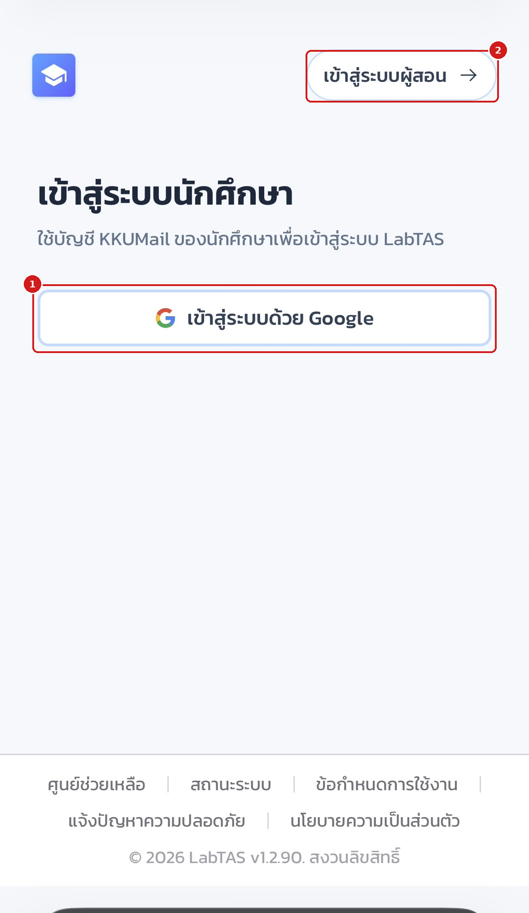
หากยังไม่เข้าสู่ระบบ จะไม่สามารถใช้งานส่วนใด ๆ ของฝั่งนักศึกษาได้ รวมถึงการเช็คชื่อและการจองคิว ให้เข้าสู่ระบบด้วยบัญชี KKU Mail ของตนเองเท่านั้น
19.2 หน้าหลักของนักศึกษา#
เมื่อเข้าสู่ระบบสำเร็จ ระบบจะพาเข้าสู่หน้าหลักซึ่งรวมทางลัดที่ใช้บ่อยไว้ในหน้าเดียว
- การ์ดประจำตัว แสดงชื่อ รหัสนักศึกษา จำนวนรายวิชา และสภาพอากาศประจำพื้นที่ พร้อมไอคอนกระดิ่งสำหรับเปิดการแจ้งเตือน
- การ์ด สแกน QR ทันที ทางลัดหลักสำหรับการเช็คชื่อและการจองคิว แตะเพื่อเปิดกล้องสแกนได้ทันที
- การ์ด รายวิชา แสดงจำนวนวิชาที่ลงทะเบียน แตะเพื่อไปหน้ารายวิชาของฉัน
- การ์ด แจ้งเตือน แสดงสถานะการแจ้งเตือนใหม่ แตะเพื่อเปิดหน้ารวมการแจ้งเตือน
- แถบเมนูล่าง ประกอบด้วย หน้าหลัก รายวิชา ปุ่ม สแกน ตรงกลาง แจ้งเตือน และบัญชี ใช้สลับหน้าหลักทั้งห้าของแอป
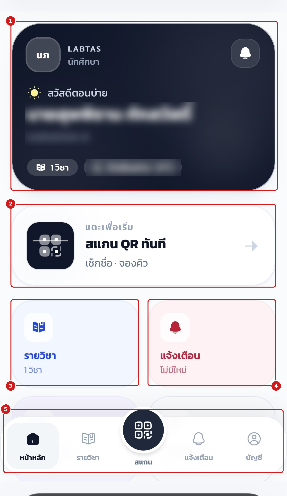
19.3 การตรวจสอบสิทธิ์เครื่องก่อนใช้งาน (กล้อง ตำแหน่ง การแจ้งเตือน)#
ก่อนใช้งานครั้งแรก แนะนำให้ตรวจสอบว่าโทรศัพท์อนุญาตสิทธิ์ที่ระบบจำเป็นต้องใช้ครบถ้วน ได้แก่ กล้อง (สแกน QR) ตำแหน่ง (ตรวจรัศมีห้องเรียน) และการแจ้งเตือน โดยเข้าจากเมนู บัญชี > สิทธิ์เครื่อง
- หน้าตรวจสอบสิทธิ์อธิบายรายการที่ต้องใช้ และสรุปสถานะ เช่น พร้อมแล้ว 1/3 สิทธิ์ เมื่ออนุญาตแล้วเบราว์เซอร์จะจดจำสิทธิ์ของเว็บไซต์ไว้ให้ใช้ครั้งต่อไป
- รายการสิทธิ์แต่ละข้อมีป้ายสถานะ เช่น รออนุญาต (ยังไม่ได้กดอนุญาต) หรือ พร้อมใช้งาน
- แตะปุ่มทดสอบของแต่ละข้อ เช่น อนุญาตและทดสอบกล้อง แล้วกด "อนุญาต" เมื่อเบราว์เซอร์ถามสิทธิ์
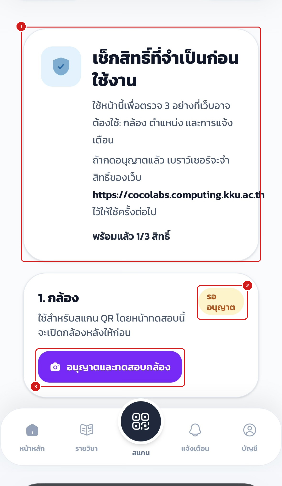
ในขั้นตอนตำแหน่ง ระบบจะทดสอบอ่านพิกัดจริงของเครื่องเพื่อยืนยันว่าใช้เช็คชื่อแบบตรวจตำแหน่งได้
- เมื่ออนุญาตและอ่านตำแหน่งสำเร็จ ป้ายสถานะจะเปลี่ยนเป็น พร้อมใช้งาน
- ปุ่ม ตรวจตำแหน่งอีกครั้ง ใช้ทดสอบซ้ำเมื่อย้ายสถานที่หรือเพิ่งเปิดสิทธิ์
- ข้อความยืนยันแจ้งว่าตรวจตำแหน่งสำเร็จ หากหมุดอยู่ถูกตำแหน่งก็พร้อมใช้งาน
- ระบบแสดง พิกัด และ ความแม่นยำ (เช่น ประมาณ ±7 เมตร) พร้อมแผนที่ประกอบ
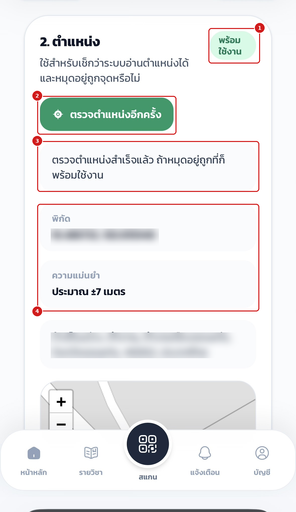
หากไม่อนุญาตสิทธิ์กล้อง จะยังใช้วิธีกรอก PIN แทนการสแกนได้ แต่หากรอบเช็คชื่อเปิดการตรวจตำแหน่งไว้ จำเป็นต้องอนุญาตสิทธิ์ตำแหน่ง มิฉะนั้นจะเช็คชื่อไม่ผ่าน
19.4 รายวิชาของฉันและหน้าภาพรวมรายวิชา#
แตะเมนู รายวิชา ที่แถบล่างเพื่อดูรายวิชาที่ลงทะเบียนทั้งหมด
- ส่วนหัว รายวิชาของฉัน สรุปจำนวนวิชาที่ลงทะเบียนในระบบ
- การ์ดรายวิชาแสดง รหัสวิชา ชื่อวิชา ผู้สอน ภาคการศึกษา และหมู่เรียน (Section) แตะการ์ดเพื่อเข้าสู่หน้ารายวิชา
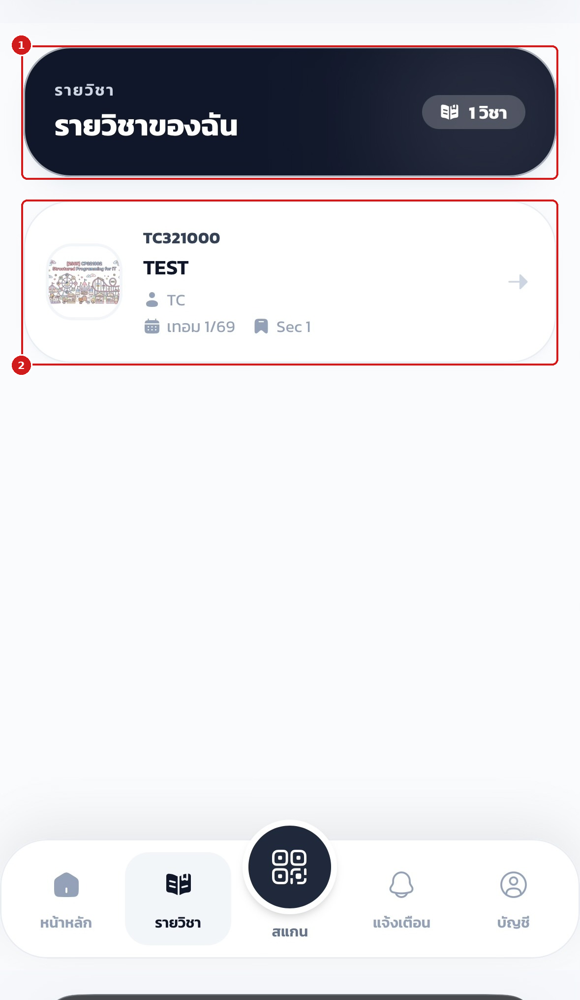
ภายในหน้ารายวิชาจะพบการ์ดข้อมูลวิชาและแท็บย่อยสี่แท็บ
- ปุ่ม ย้อนกลับ และ หน้าหลัก ใช้ออกจากหน้ารายวิชา
- แถบแท็บ ภาพรวม / คะแนน / เช็กชื่อ / อัปเดต ใช้สลับมุมมองภายในรายวิชา
- แท็บภาพรวมส่วนแรกแสดง กลุ่มของฉัน ทั้งกลุ่มโปรเจกต์และกลุ่มรายสัปดาห์พร้อมจำนวนสมาชิก
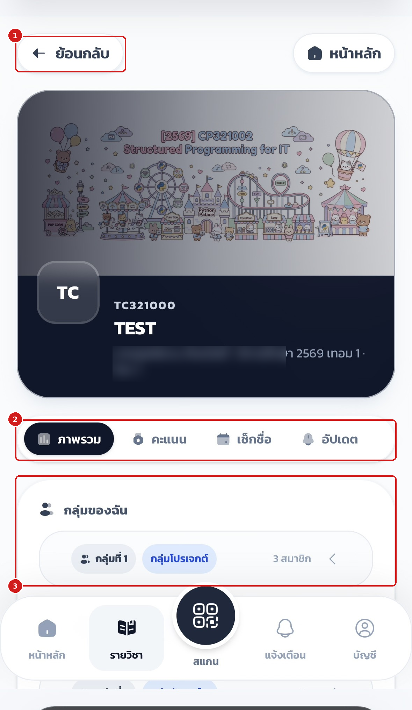
เลื่อนลงในแท็บภาพรวมเพื่อดูสรุปข้อมูลสำคัญของตนเองในวิชานั้น
- สรุปการเข้าเรียน จำนวน มาเรียน / สาย / ลา / ขาด พร้อมเปอร์เซ็นต์การเข้าเรียน
- สรุปคะแนนงาน ความคืบหน้าการตรวจและคะแนนรวมของแต่ละประเภทงาน
- กลุ่มเรียน หมู่เรียน (Section) ที่ตนสังกัด
- แถบเมนูล่าง สำหรับกลับสู่ส่วนอื่นของแอป
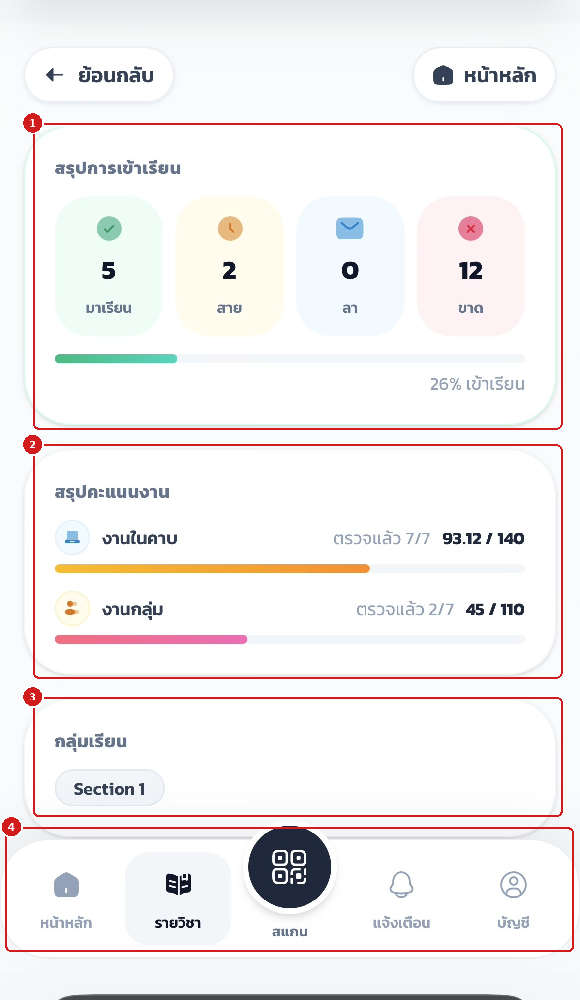
19.5 การเช็คชื่อเข้าเรียน#
เมื่ออาจารย์เปิดรอบเช็คชื่อและฉาย PIN/QR ขึ้นจอหน้าห้อง ให้แตะปุ่ม สแกน ตรงกลางแถบเมนูล่าง
- หน้าต่างกล้อง จะเปิดขึ้นสำหรับสแกน QR Code บนจอหน้าห้อง เมื่อสแกนติดระบบจะพาเข้าหน้าเช็คชื่อของรอบนั้นทันที
- หากเปิดกล้องไม่ได้ ระบบจะแสดงข้อความ เกิดข้อผิดพลาด พร้อมคำแนะนำให้ใช้ช่องกรอกด้านล่างแทน
- ส่วน กรอก PIN หรือวางลิงก์ ใช้เมื่อกล้องเปิดไม่ได้หรือมีข้อมูล QR อยู่แล้ว
- กรอก รหัส PIN 6 หลัก ที่แสดงบนจอ (หรือวางลิงก์จาก QR) แล้วแตะปุ่มลูกศรเพื่อยืนยัน
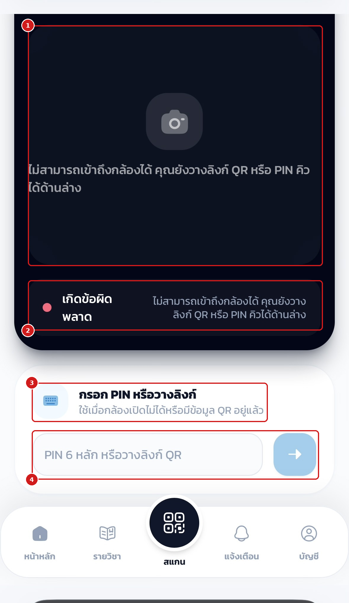
ขั้นตอนหลังจากเข้าสู่รอบเช็คชื่อ
- กรอกหรือยืนยัน รหัส PIN 6 หลัก ของรอบ (PIN เปลี่ยนทุก 1 นาที ให้ใช้รหัสล่าสุดเสมอ)
- หากรอบนั้นเปิดการตรวจตำแหน่ง ระบบจะขอสิทธิ์ ตำแหน่ง (GPS) เพื่อตรวจว่าอยู่ในรัศมีห้องเรียน ให้กดอนุญาต
- เมื่อเช็คชื่อสำเร็จ ชื่อจะปรากฏบนจอหน้าห้องทันที สถานะ มา/สาย ขึ้นกับเวลาตัดสายที่อาจารย์ตั้งไว้
การตรวจสอบประวัติย้อนหลังทำได้ที่แท็บ เช็กชื่อ ในหน้ารายวิชา
- เลือกแท็บ เช็กชื่อ
- ส่วนบนสรุปจำนวน มาเรียน / สาย / ลา / ขาด ทั้งเทอม
- รายการด้านล่างแสดง ประวัติรายรอบ พร้อมสถานะและเวลาเช็กอินจริง
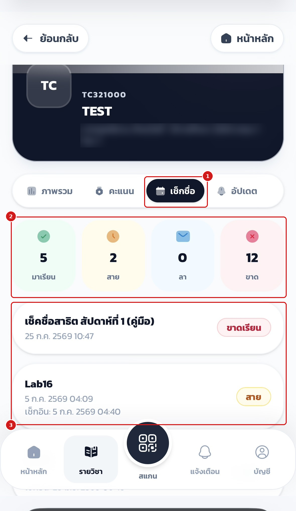
การเช็คชื่อหลังเวลาตัดสายจะถูกบันทึกเป็น "สาย" โดยอัตโนมัติ และหากไม่เช็คชื่อภายในรอบจะถูกนับเป็น "ขาด" กรณีลาป่วยหรือเหตุจำเป็นให้แจ้งอาจารย์เพื่อปรับสถานะย้อนหลัง
19.6 การจองคิวตรวจงานและขอความช่วยเหลือ#
เมื่ออาจารย์หรือผู้ช่วยสอนเปิดรอบคิว (ขั้นตอนเดียวกับคู่มือฉบับสอบจบ)
- แตะปุ่ม สแกน แล้วสแกน QR Code ของรอบคิว (บนจอหน้าห้องหรือ QR ประจำโต๊ะ) หรือกรอก PIN ของรอบที่ช่องกรอกด้านล่าง (ดูภาพที่ 19.8)
- ยืนยัน รหัสนักศึกษา และ เลขโต๊ะที่นั่ง (การสแกน QR ประจำโต๊ะจะระบุโต๊ะให้อัตโนมัติ)
- เลือกประเภทการจองเป็น ตรวจงาน (Grading) พร้อมหัวข้องานที่ต้องการส่งตรวจ หรือ ขอความช่วยเหลือ (Help) เมื่อติดปัญหา แล้วกด จองคิว
- ติดตาม สถานะคิว จากโทรศัพท์และจอโปรเจกเตอร์หน้าห้อง และกด ยกเลิกคิว ได้หากยังไม่ถูกเรียก
- เมื่อผู้ช่วยสอนตรวจเสร็จและลงคะแนน ระบบจะ แจ้งเตือนผลทันที
หากรอบคิวถูกตั้งค่าเชื่อมกับการเช็คชื่อ นักศึกษาที่ไม่ได้เช็คชื่อเข้าเรียนในคาบนั้นจะไม่สามารถจองคิวได้ ให้เช็คชื่อให้เรียบร้อยก่อนจองคิว
19.7 การดูคะแนนของตนเอง#
ที่หน้ารายวิชา เลือกแท็บ คะแนน
- แท็บบน (ภาพรวม / คะแนน / เช็กชื่อ / อัปเดต) ใช้สลับมุมมองภายในรายวิชา
- คะแนนรวม (งาน) แสดงคะแนนสะสมเทียบคะแนนเต็มพร้อมแถบความคืบหน้า
- เลือกหมวดคะแนน กรองตามประเภทงาน (ทั้งหมด / คะแนนแลป / งานกลุ่ม / งานกลุ่มสัปดาห์ ฯลฯ)
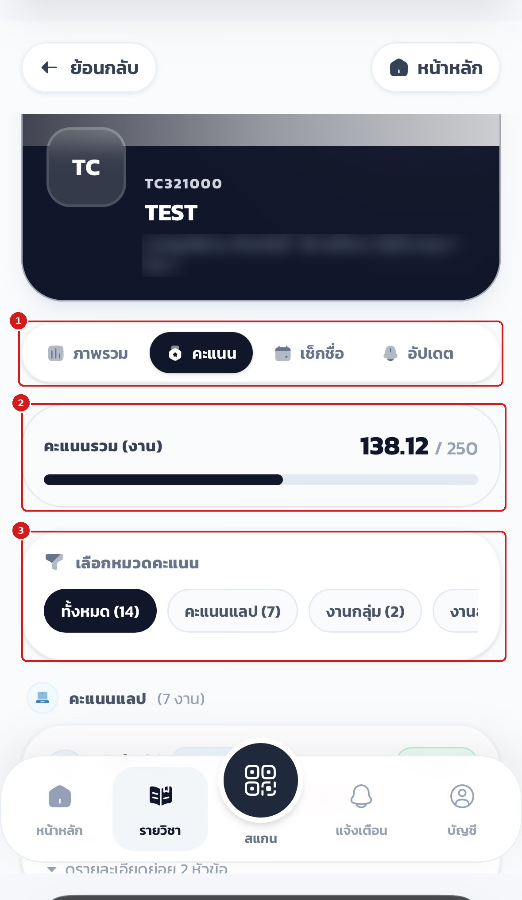
แต่ละงานเปิดดูรายละเอียดได้
- การ์ดงานแสดง คะแนนที่ได้/คะแนนเต็ม ประเภทงาน และผู้ตรวจพร้อมเวลา
- แตะ ดูรายละเอียดย่อย เพื่อดูคะแนนรายข้อ (เช่น ข้อ 1, ข้อ 2)
- ป้าย ตรวจแล้ว ยืนยันสถานะการตรวจของงานนั้น
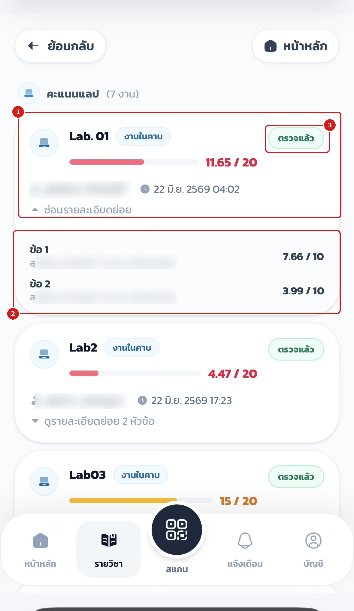
19.8 กลุ่มของฉันและประกาศจากรายวิชา#
ที่แท็บ อัปเดต ของรายวิชา
- กลุ่มของฉัน แสดงกลุ่มโปรเจกต์และกลุ่มรายสัปดาห์ที่สังกัด พร้อมรายชื่อสมาชิกในกลุ่ม
- รายการ กลุ่มสัปดาห์ แต่ละสัปดาห์กดขยายดูสมาชิกได้
- ประกาศจากรายวิชา แสดงประกาศที่อาจารย์ส่งถึงผู้เรียนในวิชานั้น
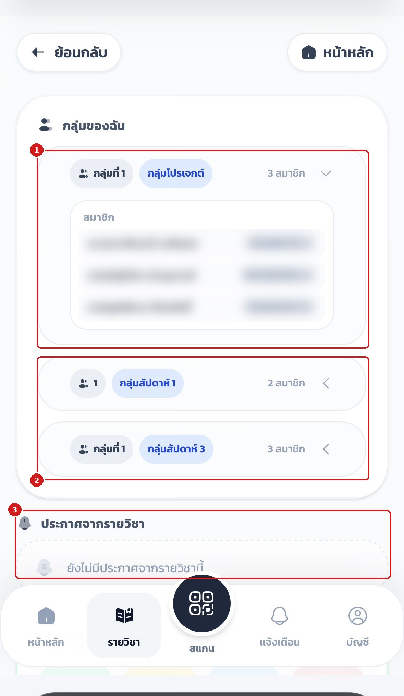
19.9 การแจ้งเตือน#
เมนู แจ้งเตือน ที่แถบล่างรวมการแจ้งผลคะแนน การเช็คชื่อ คิว และประกาศจากระบบไว้ในที่เดียว
- ปุ่ม อ่านทั้งหมด ทำเครื่องหมายว่าอ่านทุกรายการ และ ล้างที่อ่านแล้ว ลบรายการที่อ่านแล้วออกจากกล่อง
- แถบตัวกรอง ทั้งหมด / ยังไม่อ่าน / อ่านแล้ว ใช้เลือกดูเฉพาะกลุ่มที่ต้องการ
- รายการแจ้งเตือนแสดงตามเวลา เมื่อมีคะแนน เช็กชื่อ คิว หรือประกาศใหม่จะแสดงที่หน้านี้ (ภาพตัวอย่างเป็นสถานะยังไม่มีการแจ้งเตือน)
- จุดสังเกต เมื่อมีการแจ้งเตือนใหม่ ไอคอน แจ้งเตือน ที่แถบล่างจะแสดงสัญลักษณ์กำกับ
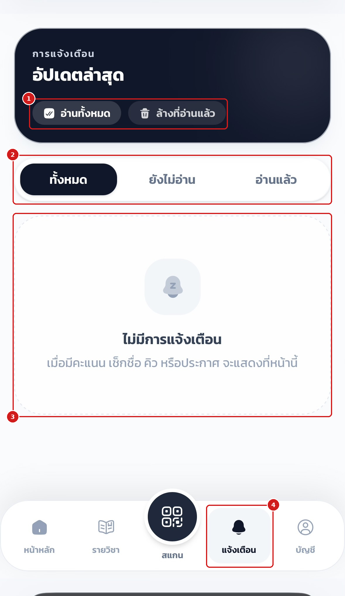
19.10 บัญชีผู้ใช้และการออกจากระบบ#
เมนู บัญชี ที่แถบล่างใช้ตรวจสอบข้อมูลบัญชีนักศึกษาที่ระบบจับคู่ไว้
- การ์ดประจำตัว แสดงชื่อ สาขา และเครื่องหมายยืนยันการเชื่อมบัญชีสำเร็จ
- ส่วนข้อมูลบัญชีแสดง อีเมล KKU Mail รหัสนักศึกษา (พร้อมปุ่มคัดลอก) และสาขา ที่ผูกกับบัญชี
- เมนู สิทธิ์เครื่อง เปิดหน้าตรวจสอบสิทธิ์กล้อง ตำแหน่ง และแผนที่ (ดูหัวข้อ 19.3)
- แท็บ บัญชี ที่แถบล่างจะไฮไลต์เมื่ออยู่ในหน้านี้
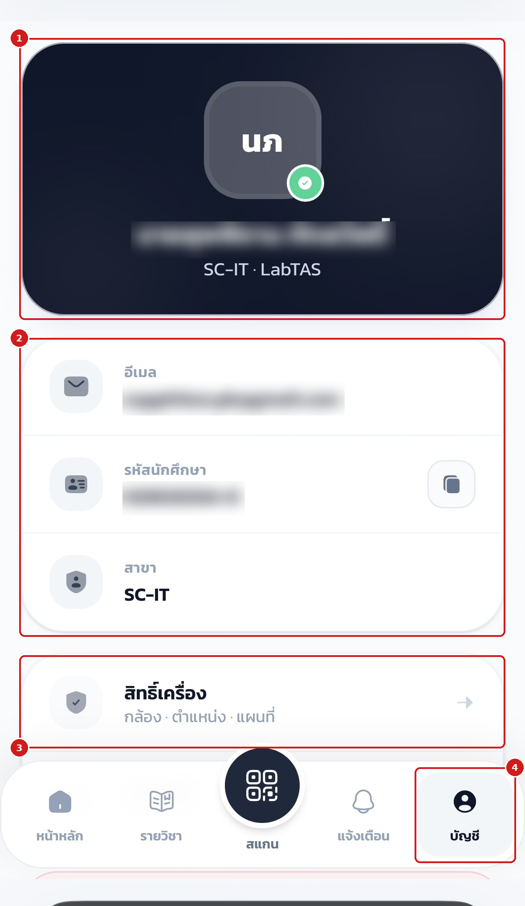
เลื่อนลงด้านล่างของหน้าบัญชี
- เมนู สิทธิ์เครื่อง สำหรับตรวจกล้อง ตำแหน่ง และแผนที่
- เมนู ช่วยเหลือ รวมคู่มือการใช้งานและช่องทางติดต่อฝ่ายสนับสนุน
- ปุ่ม ออกจากระบบ ใช้เมื่อเลิกใช้งาน โดยเฉพาะเมื่อเข้าสู่ระบบบนเครื่องที่ใช้ร่วมกับผู้อื่น
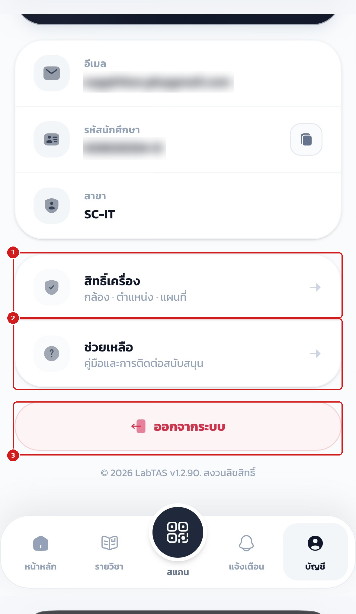
หากพบว่าข้อมูลรหัสนักศึกษาหรือสาขาไม่ถูกต้อง ให้ติดต่ออาจารย์ผู้สอนหรือผู้ดูแลระบบเพื่อแก้ไขข้อมูลการจับคู่บัญชี ไม่ควรใช้บัญชีของผู้อื่นเข้าสู่ระบบแทนกัน